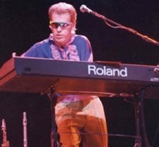
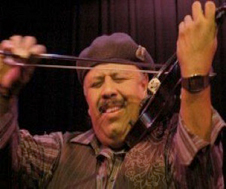
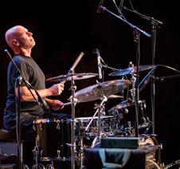
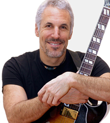
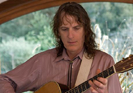
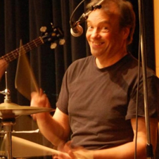

Byron Allred
Pianist/ Composer/ Engineer
1990 Bammie award winner with Todd Rundgren & Utopia.
Credits:
Steve Miller Band
Norton Buffalo
Dave Martin House Party
Movie Soundtrack: Night of the Comet.
Carlos Reyes
Violinist
He made his debut on harp with the Oakland Symphony and on the violin with the Oakland Youth Symphony at just fourteen years of age. He has worked in the professional recording industry for commercials, solo artist and instrumental background music for the acclaimed children's shows "Sesame Street" and "Villa Alegre."
Mick Mestek
Drums/ Percussion
Mick Mestek toured with Tower of Power for three years and recorded the 1987 album "Power".
Mick's many touring and recording credits include Chris Cain Band, Etta James, Tracy Nelson, Buddy Miles, Pete Escovedo, Charlie Musselwhite, Omega, blues guitarists Tommy Castro, Daniel Castro, Ron Thompson, Roy Rogers, bassist/producer Curtis Ohlson, Rosie Gaines, guitarist/composer Ray Obiedo and a who's who of Bay Area favorites including The Hoodoo Rhythm Devils, Tortilla Soup and Manzo.
Mick got back together with Tower of Power, for the band's 40th anniversary celebration at The Fillmore.
Jeff Pevar
Guitar
Forest Fox met Jeff Pevar when Jeff was 15 years old. They are both from Connecticut. Since then, his illustrious career has included world tours with Ray Charles, Joe Cocker, James Taylor, CSN, Ricky Lee Jones, Mark Cohn, David Crosby's Trio CPR, Graham Nash, Jefferson Starship..., and the list goes on.
Jeff is currently touring with Bette Midler on her Divine Intervention Tour.
Ken Cooper
Lead Guitar/ Singer
A well-known and respected name throughout the Bay Area, Ken Cooper can be seen every week performing solo or with one of his great bands. He plays on big concert stages as well as intimate settings.
Donn Spindt
Drummer/ Singer/ Vocal Coach
At a very young age, drummer Donn Spindt was playing under the bright lights as a founding member of the vocal pop sensation, the Rubinoos. He has played internationally with many bands, including The RaveUps, Jonathan Richman, Andy Kaufman / Tony Clifton, Rodney Dangerfield. With the Rubinoos, he played on Dick Clark’s Bandstand as well as in the opening act for the Elvis Costello US Tour